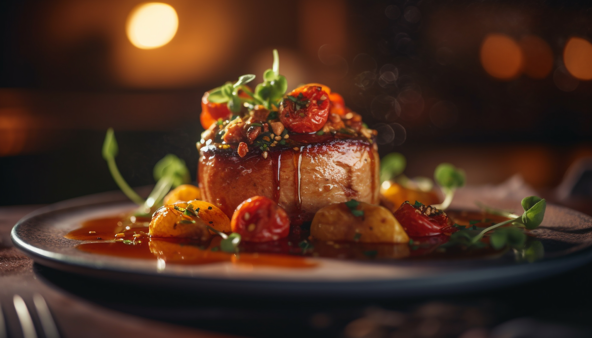
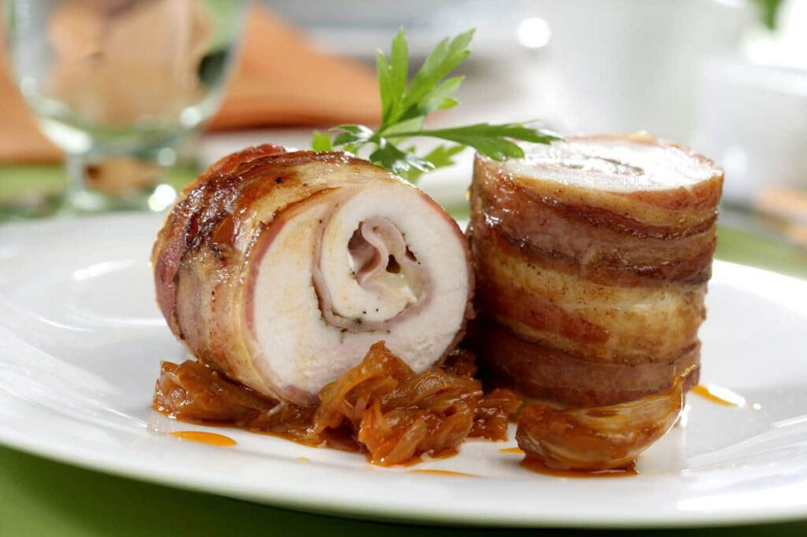

SABORES GOURMET UNICO
Horarios de Atención
| Hora | Chef | Tema | Tickets |
|---|---|---|---|
| 9:00 AM | Chef Marco Aurelio | Alta cocina mediterránea | 50 |
| 11:00 AM | Chef Lucía Fernández | Fusión asiática contemporánea | 40 |
| 1:00 PM | Chef André Moreau | Repostería de vanguardia | 35 |
| 3:00 PM | Chef Valentina Cruz | Cata de vinos y maridaje | 60 |
| 5:00 PM | Chef Hiroshi Tanaka | Cocina molecular | 30 |
| 7:00 PM | Chef Isabella Rossi | Gran menú de cierre | 80 |
Festín Gourmet
Bienvenido al evento culinario más esperado del año. Fusión Gourmet reúne a los mejores chefs del mundo para ofrecerte una experiencia gastronómica única, llena de sabores, aromas y creatividad.
- Ingredientes de temporada y sostenibles
- Técnicas innovadoras de alta cocina
- Experiencias únicas e irrepetibles
- Patrocinado por: CulinaryWorld, GastroArt y FoodLab

Galería


Mira Nuestra Cocina
Descubre el arte detrás de cada plato. Haz clic en el video para ver la magia en acción.